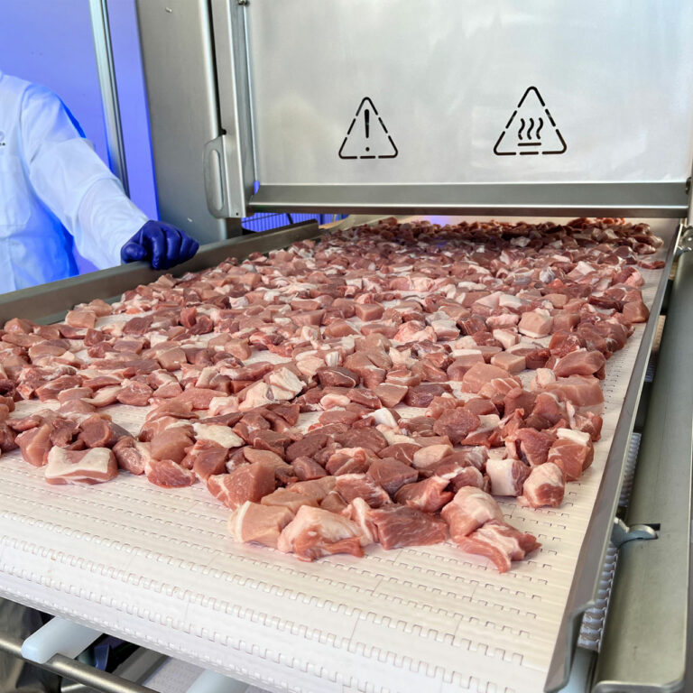
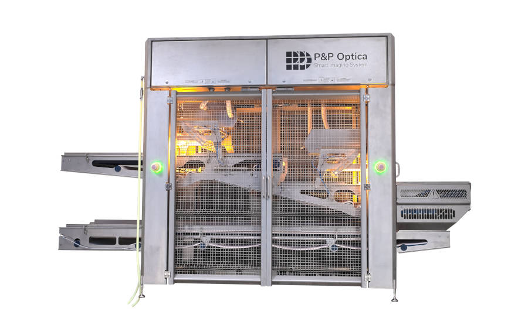

P&P Optica is an optics company that specializes in food safety, particularly in meat production.
They develop machines that use visual and hyperspectral cameras to detect foreign contaminants in a production line environment.
These contaminants are identified using artificial intelligence, and the models that are used are developed in-house.
Computing is integral to their business model - in AI, machine learning, and the programs used to process the mass amounts of data
for each model. PPO is currently the only company in the food safety industry to use both hyperspectral and visual imaging, giving them a niche spot on the market
and the ability to meet customer's needs more effectively.
For my Summer and Fall 2024 co-op work terms, I began working at P&P Optica (PPO) as part of an 8 month co-op extending from mid June to the end of the fall school semester in late December.
I worked in their Data Services department as a data technician, and assisted with the collection and processing of data.
In order to create and train their models, large amounts of data are required, and quality data is integral to a good machine learning model.
We collected large samples of data based on foreign materials that would be found at
our customers' facilities, annotated and post-processed this data, and finally uploaded it so our software team could start developing a model. Most of the time we ran data
collection in house, but luckily I was able to travel to a customer plant in the States to experience how an in-field data collection worked. My team and I spent a week running data samples, interacting
with our customer, and troubleshooting any issues that arose during our stay.
My learning goals going into my coop term were as follows:
- Learn how to better approach difficult problems with an open mindset. Develop strategies to divide problems into manageable subunits without getting lost in
the enormity of them.
- Further develop effective teamwork and communication skills, so as to more efficiently collaborate on projects and communicate thought processes.
- Further develop and utilize my skills in Python and/or other programming languages in any available scenario at PPO.
I was also inspired to develop additional learning goals that pertained more specifically to my tasks at PPO:
- Become involved in all aspects of the data services team, and participate in data collection and post-processing/annotation.
- Travel to one or more customer plants to experience an on-site data collection, and help install or setup one of our machines.
- Learn as much as possible about the hardware and software that go into developing one of our machines.
I was successful in completing either fully or partially a good number of these goals, as described below:
- I have had multiple times where I have participated in team projects, as my work environment was very team-oriented, and through these experiences I am now confident
in my ability to collaborate and communicate effectively. I have found that I am a very social person in my work environment, and in my next work term, I would like
to improve on communicating in a more professional context.
- I travelled in-field to perform a data collection and assist in setup of one of our machines, interacted with our customer and troubleshooted any malfunctions. I was part of a team,
and through clear communication and effective collaboration, we completed our assigned collection using only 80% of the projected time required.
- I have been faced with problems that I have had to learn how to solve, and have improved significantly in learning how to approach them. I am less overwhelmed by assigned projects,
and have no problems asking for guidance when needed.
- I was given opportunities to explore the PPO codebase, and help program spreadsheets that were integral to maintaining consistent customer data,
using JavaScript. Unfortunately, my job was not centered around developing our software, so there were limited opportunities to code.
- I worked in both data collection and post-processing scenarios, and became proficient in the procedures used in both processes. Needed little to no oversight by my manager, and was always able to meet project deadlines.
My time at P&P Optica has been insightful and stimulating, and I am really happy with how these two work terms have gone.
I enjoyed learning the unique aspects of my job and looking for new opportunities that presented themselves. I set attainable goals for myself
during my time there and was successful in completing them. I would like to acknowledge my awesome managers, Jenny Udema and Brittany Cronier, and the wonderful coworkers I had in the
data services team, for being a constant positive force in encouraging me in my work and learning. Thank you, P&P Optica, for an incredible work experience!